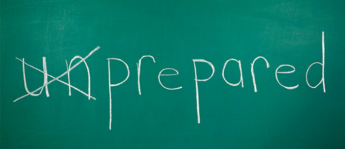

<!DOCTYPE html>
<html lang="en">
  <head>
    <meta charset="utf-8" />
    <meta name="viewport" content="width=device-width, initial-scale=1.0, maximum-scale=1.0, user-scalable=no" />

    <title>Signs, Signals, and Codes Merit Badge</title>
    <link rel="shortcut icon" href="./favicon.ico" />
    <link rel="stylesheet" href="./dist/reset.css" />
    <link rel="stylesheet" href="./dist/reveal.css" />
    <link rel="stylesheet" href="./dist/theme/white.css" id="theme" />
    <link rel="stylesheet" href="./css/highlight/zenburn.css" />

    <link rel="stylesheet" href="./_assets/style.css" />

  </head>
  <body>
    <div class="reveal">
      <div class="slides"><section  data-markdown><script type="text/template">

# Signs, Signals, and Codes

Tyler Akins

<table width="30%"><tr><td>


</td></tr></table>

<aside class="notes"><p>BRING THE CODE SHEET!
Bring merit badge pamphlet.
Bring plenty of paper for people to use.
Bring braille encoder and cardstock.
Bring topographical map.</p>
</aside></script></section><section  data-markdown><script type="text/template">
## Who am I?

Tyler Akins

Cipher website<br />
Helped proofread books on ciphers

612-387-8102 <br />
fidian@rumkin.com

</td></tr></table>

Email is for adults and for Scouts that have a current Cyber Chip.
<!-- .element style="color: red" -->
</script></section><section ><section data-markdown><script type="text/template">
## Expectations
</script></section><section data-markdown><script type="text/template">
<!-- .slide: data-background="on-my-honor-coin.jpg" data-background-size="cover" -->

## Scout-Like Behavior
<!-- .element: style="background-color: rgba(255, 255, 255, 0.5)" -->

Respectful and engaged, otherwise you will be asked to leave.
<!-- .element: style="background-color: rgba(255, 255, 255, 0.5)" -->
</script></section><section data-markdown><script type="text/template">
## Like College, Not High School

With college, you pay the instructor to teach. It's up to the student to learn.
</script></section><section data-markdown><script type="text/template">
## Not Prepared?

It's okay. Let me know, I make a note, and we will simply move on.

I'll try to help achieve as many requirements as possible.


</script></section><section data-markdown><script type="text/template">
## Action Verb

Each requirement has action verbs. "Describe," "prepare," "report," "interview," and other actions need to be performed.

Requirements must be met word for word.
</script></section><section data-markdown><script type="text/template">
## Ethics

Scouts are expected to have done their own work. It is immoral to claim another person's work as your own.
</script></section><section data-markdown><script type="text/template">
## Participation Is Expected


</script></section></section><section ><section data-markdown><script type="text/template">
## Importance
### Requirement 1
</script></section><section data-markdown><script type="text/template">
1: Discuss with your counselor the importance of signs, signals, and codes, and why people need these different methods of communication. Briefly discuss the history and development of signs, signals, and codes.
</script></section><section data-markdown><script type="text/template">
What are signs, signals, and codes?

<aside class="notes"><p>BSA definition isn&#39;t what&#39;s expected - signs communicate messages without words.</p>
</aside></script></section><section data-markdown><script type="text/template">
<!-- .slide: data-background="automotive-symbols.jpg" data-background-size="contain" data-background-color="#03070a" -->

<aside class="notes"><p>Signs can also be confusing without a shared meaning.</p>
</aside></script></section><section data-markdown><script type="text/template">
How are signs, signals, and codes used?

<aside class="notes"><p>They can indicate danger, instructions for use, or convey messages.</p>
</aside></script></section><section data-markdown><script type="text/template">
When were signs, signals, and codes first used?
</script></section><section data-markdown><script type="text/template">
<!-- .slide: data-background="oldest-cave-painting.jpg" data-background-size="contain" -->

<aside class="notes"><p>Earliest sign: picture of pig in Indonesia, 45,500 years ago.</p>
</aside></script></section><section data-markdown><script type="text/template">
<!-- .slide: data-background="caveman-yes.gif" data-background-size="contain" -->

<aside class="notes"><p>Earliest signal: likely a gesture</p>
</aside></script></section><section data-markdown><script type="text/template">
<!-- .slide: data-background="caesar-cipher.png" data-background-size="contain" -->

<aside class="notes"><p>Earliest code: Caesar cipher, about 56 BC, general Julius Caesar</p>
</aside></script></section><section data-markdown><script type="text/template">
How did signs, signals, and codes develop over time?

<aside class="notes"><p>They became more complex. Fire on tops of mountains, reflected sunlight from shields, smoke signals.</p>
<p>Codes typically change a message from one form to another. They can obscure, shorten, or allow the transmission of a message through a different medium.</p>
</aside></script></section></section><section ><section data-markdown><script type="text/template">
## Emergency Communications
### Requirement 2
</script></section><section data-markdown><script type="text/template">
2: Explain the importance of signaling in emergency communications. Discuss with your counselor the types of emergency or distress signals one might use to attract airborne search-and-rescue personnel if lost in the outdoors or trying to summon assistance during a disaster. Illustrate these signaling examples by the use of photos or drawings.
</script></section><section data-markdown><script type="text/template">
<!-- .slide: data-background="ground-to-air.jpg" data-background-size="contain" -->

<aside class="notes"><p>2 mylar space blankets cut up to make the arrow. The trunk of the arrow is about 2 feet wide and 14 feet long.</p>
<p><a href="https://www.flickr.com/photos/troop14/8433084241">https://www.flickr.com/photos/troop14/8433084241</a></p>
</aside></script></section><section data-markdown><script type="text/template">
<!-- .slide: data-background="air-seeing-signal.jpg" data-background-size="contain"-->
</script></section><section data-markdown><script type="text/template">
<!-- .slide: data-background="pop-smoke.jpg" data-background-size="contain" -->
</script></section><section data-markdown><script type="text/template">
<!-- .slide: data-background="smoke-from-air.jpg" data-background-size="contain"-->
</script></section><section data-markdown><script type="text/template">
<!-- .slide: data-background="smoke-from-air2.jpg" data-background-size="contain"-->
</script></section></section><section ><section data-markdown><script type="text/template">
## Morse Code
### Requirement 3a
</script></section><section data-markdown><script type="text/template">
3a: Describe what Morse code is and the various means by which it can be sent. Spell your first name using Morse code. Send or receive a message of six to 10 words using Morse code.
</script></section><section data-markdown><script type="text/template">
<!-- .slide: data-background="morse-code.jpg" data-background-size="contain" -->
</script></section><section data-markdown><script type="text/template">
<!-- .slide: data-background="morse-code-tree.png" data-background-size="contain" -->

<table style="width: 100%">
<tr>
<td style="width: 30%">&larr; Dot</td>
<td></td>
<td style="width: 30%">Dash &rarr;</td>
</tr>
</table>

<div style="height: 15em"></div>
</script></section></section><section ><section data-markdown><script type="text/template">
## American Sign Language
### Requirement 3b
</script></section><section data-markdown><script type="text/template">
3b: Describe what American Sign Language (ASL) is and how it is used today. Spell your first name using American Sign Language. Send or receive a message of six to 10 words using ASL.

<aside class="notes"><p>ASL words are not the same as English words. Articles can be omitted and there are are contractions.</p>
</aside></script></section><section data-markdown><script type="text/template">
<!-- .slide: data-background="asl.png" data-background-size="contain" -->
</script></section><section data-markdown><script type="text/template">
<!-- .slide: data-background="asl-help.gif" data-background-size="contain" -->
</script></section><section data-markdown><script type="text/template">
<!-- .slide: data-background="asl-help-me.gif" data-background-size="contain" -->
</script></section><section data-markdown><script type="text/template">
<!-- .slide: data-background="asl-i-will-help-you.gif" data-background-size="contain" -->
</script></section><section data-markdown><script type="text/template">
<!-- .slide: data-background="asl-how-are-you.gif" data-background-size="contain" -->
</script></section><section data-markdown><script type="text/template">
<!-- .slide: data-background="asl-i-dont-know.gif" data-background-size="contain" -->
</script></section><section data-markdown><script type="text/template">
<!-- .slide: data-background="force-be-with-you.gif" data-background-size="contain" -->
</script></section></section><section ><section data-markdown><script type="text/template">
## Flags
### Requirement 4
</script></section><section data-markdown><script type="text/template">
4: Give your counselor a brief explanation about semaphore, why it is used, how it is used, and where it is used. Explain the difference between semaphore flags and nautical flags.

<aside class="notes"><p>Transmits messages visually, one letter at a time, by positioning flags around the sender. Originated on land, used by the Navy and the Royal Canadian Mounted Police.</p>
</aside></script></section><section data-markdown><script type="text/template">
<!-- .slide: data-background="optical-telegraph.jpg" data-background-size="contain" -->

<aside class="notes"><p>Optical telegraph, 18th century France. Mostly used to spread gossip about aristocrats.</p>
</aside></script></section><section data-markdown><script type="text/template">
<!-- .slide: data-background="maritime-signal-flags.gif" data-background-size="contain" -->

<aside class="notes"><p>Flags here represent letters, numbers, or short messages. It does this by using many different flags. Semaphore conveys single letters at a time by flag position.</p>
</aside></script></section><section data-markdown><script type="text/template">
<!-- .slide: data-background="boat-flags.jpg" data-background-size="cover" -->

<aside class="notes"><p>Can run flags up any of the masts. Larger ships can send more complex messages because they have the space.</p>
</aside></script></section><section data-markdown><script type="text/template">
<!-- .slide: data-background="international-codes-left.jpg" data-background-size="cover" -->

<aside class="notes"><p>International Code of Signals, circa WWII (1940&#39;s). Three-letter codes also exist.</p>
</aside></script></section><section data-markdown><script type="text/template">
4a: Spell your first name using semaphore. Send or receive a message of six to 10 words using semaphore.
</script></section><section data-markdown><script type="text/template">
<!-- .slide: data-background="semaphore.jpg" data-background-size="contain" -->

<aside class="notes"><p>The images here are shown from the receiver&#39;s point of view.</p>
<p>Space/rest also should be used to separate repeated letters, such as with &quot;HELLO&quot;.</p>
</aside></script></section><section data-markdown><script type="text/template">
4b: Using illustrations or photographs, identify 10 examples of nautical flags and discuss their importance.
</script></section><section data-markdown><script type="text/template">
<!-- .slide: data-background="flags.jpg" data-background-size="contain" -->
</script></section></section><section ><section data-markdown><script type="text/template">
## Braille
### Requirement 5
</script></section><section data-markdown><script type="text/template">
5: Explain the braille reading technique and how it helps individuals with sight impairment to communicate. Then do the following:
</script></section><section data-markdown><script type="text/template">
5a: Either by sight or by touch, identify the letters of the braille alphabet that spell your name. By sight or touch, decode a braille message at least six words long.
</script></section><section data-markdown><script type="text/template">
5b: Create a message in braille at least six words long, and share this with your counselor.
</script></section><section data-markdown><script type="text/template">
<!-- .slide: data-background="braille.gif" data-background-size="contain" -->
</script></section></section><section ><section data-markdown><script type="text/template">
## Audible Signals
### Requirement 6
</script></section><section data-markdown><script type="text/template">
6a: Describe to your counselor six sound-only signals that are in use today. Discuss the pros and cons of using sound signals versus other types of signals.

<aside class="notes"><p>Train whistle. Fire alarm (questionable). Bugle calls. Whistle signals in military or shooting/archery range. Horn blasts for distress or in cars. Sirens. Doorbell.</p>
</aside></script></section><section data-markdown><script type="text/template">
6b: Demonstrate to your counselor six different silent Scout signals. Use these Scout signals to direct the movements and actions of your patrol or troop.
</script></section><section data-markdown><script type="text/template">
<!-- .slide: data-background="silent-scout-signals.jpg" data-background-size="contain" -->
</script></section></section><section ><section data-markdown><script type="text/template">
## Trail Signs
### Requirement 7
</script></section><section data-markdown><script type="text/template">
7: On a Scout outing, lay out a trail for your patrol or troop to follow. Cover at least one mile in distance and use at least six different trail signs and markers. After the Scouts have completed the trail, follow no-trace principles by replacing or returning trail markers to their original locations.
</script></section><section data-markdown><script type="text/template">
<!-- .slide: data-background="trail-signs.jpg" data-background-size="contain" -->
</script></section><section data-markdown><script type="text/template">
<!-- .slide: data-background="trail-blaze-symbols.svg" data-background-size="contain" -->
</script></section></section><section ><section data-markdown><script type="text/template">
## Signals
### Requirement 8
</script></section><section data-markdown><script type="text/template">
8: For THREE of the following activities, demonstrate five signals each. Tell what the signals mean and why they are used:

8a: Sports officials hand signs/signals

8b: Heavy-equipment operators hand signals

8c: Aircraft carrier catapult crew signals

8d: Cyclists hand signals

8e: An activity selected by you and your counselor
</script></section></section><section ><section data-markdown><script type="text/template">
## Examples Used Today
### Requirement 9

9: Share with your counselor 10 examples of symbols used in everyday life. Design your own symbol. Share it with your counselor and explain what it means.
</script></section><section data-markdown><script type="text/template">
9a: Show examples of 10 traffic signs and explain their meaning.
</script></section><section data-markdown><script type="text/template">
<!-- .slide: data-background="traffic-signs.jpg" data-background-size="contain" -->
</script></section><section data-markdown><script type="text/template">
9b: Using a topographical map, explain what a map legend is and discuss its importance. Point out 10 map symbols and explain the meaning of each.
</script></section><section data-markdown><script type="text/template">
9c: Discuss text-message symbols and why they are commonly used. Give examples of your favorite 10 text symbols or emoticons. Then see if your counselor or parent can identify the meaning or usage of each symbol.
</script></section></section><section ><section data-markdown><script type="text/template">
## Ciphers and Cryptography
### Requirement 10
</script></section><section data-markdown><script type="text/template">
10: Briefly discuss the history of secret code writing (cryptography). Make up your own secret code and write a message of up to 25 words using this code. Share the message with a friend or fellow Scout. Then share the message and code key with your counselor and discuss the effectiveness of your code.
</script></section></section><section ><section data-markdown><script type="text/template">
# THE END

### Thank you!

*You survived!* <!-- .element style="font-size: 0.6em" -->
</script></section><section data-markdown><script type="text/template">
Tyler Akins

<table><tr><td>

12650 130th Ave N<br>
Dayton, MN 55327

</td><td>

612-387-8102 <br>
fidian@rumkin.com

</td></tr></table>

Email is for adults and for Scouts that have a current Cyber Chip. <!-- .element style="color: red" -->
</script></section></section></div>
    </div>

    <script src="./dist/reveal.js"></script>

    <script src="./plugin/markdown/markdown.js"></script>
    <script src="./plugin/highlight/highlight.js"></script>
    <script src="./plugin/zoom/zoom.js"></script>
    <script src="./plugin/notes/notes.js"></script>
    <script src="./plugin/math/math.js"></script>
    <script>
      function extend() {
        var target = {};
        for (var i = 0; i < arguments.length; i++) {
          var source = arguments[i];
          for (var key in source) {
            if (source.hasOwnProperty(key)) {
              target[key] = source[key];
            }
          }
        }
        return target;
      }

      // default options to init reveal.js
      var defaultOptions = {
        controls: true,
        progress: true,
        history: true,
        center: true,
        transition: 'default', // none/fade/slide/convex/concave/zoom
        plugins: [
          RevealMarkdown,
          RevealHighlight,
          RevealZoom,
          RevealNotes,
          RevealMath
        ]
      };

      // options from URL query string
      var queryOptions = Reveal().getQueryHash() || {};

      var options = extend(defaultOptions, {"margin":0.1,"transition":"slide"}, queryOptions);
    </script>


    <script>
      Reveal.initialize(options);
    </script>
  </body>
</html>
